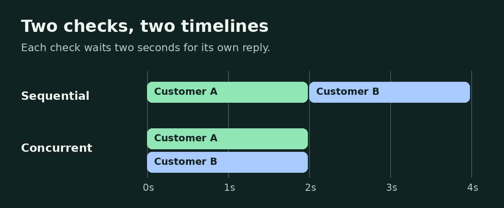
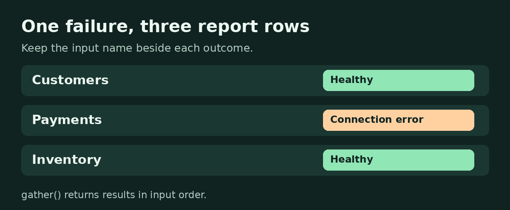
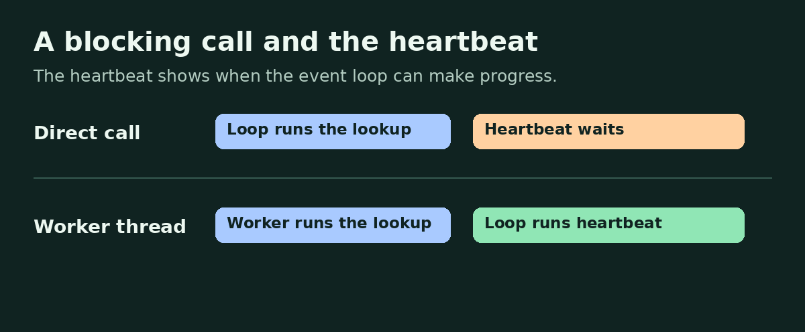
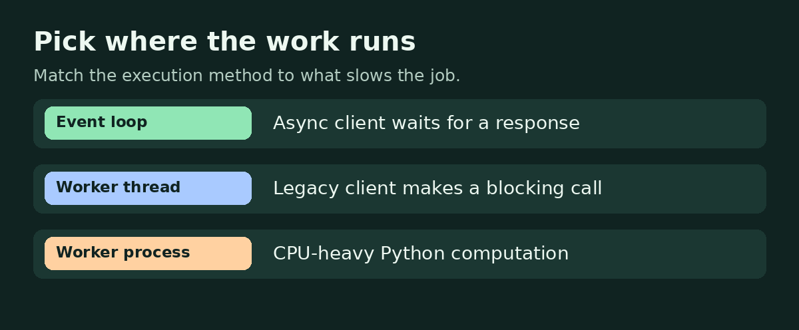

Async & Concurrency Essentials
Find out why an integration checker feels slow, then make it responsive without losing track of individual failures.
Sequential & concurrent work
A customer dashboard needs two independent replies. Each takes two seconds. Before you run this script, predict when check B starts in each version.
Sequential work finishes one check before starting the next. Concurrent work lets their lifetimes overlap. Parallel work actually runs at the same instant, such as two CPU jobs on separate cores.
Run the code
import asyncio
from time import perf_counter
async def check_customer(name):
print(f"Start {name}") # Show when the check begins.
await asyncio.sleep(2) # Stand in for a slow network reply.
print(f"Done {name}") # Show when the reply comes back.
async def main():
start = perf_counter() # Start the stopwatch for the first run.
await check_customer("A")
await check_customer("B")
print(f"Sequential: {perf_counter() - start:.1f}s")
start = perf_counter() # Reset the stopwatch for the second run.
first = asyncio.create_task(check_customer("A"))
second = asyncio.create_task(check_customer("B"))
await first # Both checks have already been scheduled.
await second
print(f"Concurrent: {perf_counter() - start:.1f}s")
if __name__ == "__main__":
asyncio.run(main())Terminal output
Start A
Done A
Start B
Done B
Sequential: 4.0s
Start A
Start B
Done A
Done B
Concurrent: 2.0sWalk through it
asynciosupplies the event loop and task helpers.perf_counter()measures elapsed time between two readings.async defdeclares a coroutine function. Withincheck_customer(), the first print marks the start, the sleep models the wait and the final print marks the finish.- The first two
awaitlines are sequential. B is called after A completes, so the two waits add up to roughly four seconds. - In the second run, both
create_task()calls happen before either task is awaited. The waits overlap, so the run takes roughly two seconds. Actual timing varies. - The final guard makes the file runnable as a script.
asyncio.run(main())starts the event loop and runs the entry coroutine.

Start B in the terminal. It appears after Done A in the first run and before either check finishes in the second.Threads, processes & futures
An old integration library can only make blocking calls. A thread pool supplies a limited number of worker threads for those calls. A process pool gives workers separate processes and is a practical option for CPU-heavy Python work.
Run the code
from concurrent.futures import ThreadPoolExecutor, as_completed
def check(name):
return f"{name}: healthy" # Replace the stub with the blocking client.
with ThreadPoolExecutor(max_workers=2) as pool:
jobs = {pool.submit(check, name): name for name in ("Customer", "Inventory")}
report = []
for future in as_completed(jobs):
report.append((jobs[future], future.result()))
print(sorted(report)) # Sort only the final report.Terminal output
[('Customer', 'Customer: healthy'), ('Inventory', 'Inventory: healthy')]Walk through it
- The import provides a managed pool and a way to iterate over finished jobs.
check()is the function a worker calls. submit(check, name)schedules one call and returns a future, a handle to its eventual outcome. The dictionary keeps the service name beside that handle.as_completed()yields finished futures.future.result()returns the result or raises the worker’s exception. The sorted print keeps the example reproducible regardless of finish order.- The
withblock shuts down the executor on exit. A real checker can catch an expected error aroundfuture.result()and record it against the stored service name.
Try the Python Concurrency Lab for runnable thread and process pool examples and tests.
Coroutines, tasks & the event loop
A coroutine object represents a call you can wait for. A task schedules that coroutine and gives you a handle to it. Watch when the body actually starts.
Run the code
import asyncio
async def fetch():
print("Inside fetch")
return "ready"
async def main():
coroutine = fetch() # Make a coroutine object.
print("Coroutine created")
task = asyncio.create_task(coroutine) # Schedule it on the running loop.
status = await task # Wait for the scheduled result.
print(status)
asyncio.run(main())Terminal output
Coroutine created
Inside fetch
readyWalk through it
fetch()returns a coroutine object. Its body has not run whenCoroutine createdprints.create_task()schedules the coroutine and returns a task. Whenmain()waits on that pending task, the loop can runfetch().fetch()prints, then returns the string.await taskgives that string back tomain(). The last line runsmain()on a new event loop.
Use await fetch() directly when the caller needs its result before it can continue. Running that line still uses the event loop.
Async HTTP, timeouts & cancellation
AuditMesh checks three services before a reviewer opens a case. The report should identify the failed check and keep the two successful results.
Run the code
import asyncio
async def check(name):
await asyncio.sleep(0) # Model one point where the check can yield.
if name == "Payments":
raise ConnectionError("upstream unavailable")
return "healthy"
async def main():
names = ("Customers", "Payments", "Inventory")
results = await asyncio.gather(
*(check(name) for name in names),
return_exceptions=True,
)
for name, result in zip(names, results):
if isinstance(result, ConnectionError):
print(f"{name}: failed ({result})")
elif isinstance(result, BaseException):
raise result # Preserve unexpected errors and cancellation.
else:
print(f"{name}: {result}")
asyncio.run(main())Terminal output
Customers: healthy
Payments: failed (upstream unavailable)
Inventory: healthyWalk through it
check()is a local stand-in for an API call. Payments raises a connection error and the other checks return a status.gather()schedules the supplied operations and returns results in input order.return_exceptions=Trueincludes each child’s error in its result slot.zip()pairs the results with the matching names. The first branch reports the expected connection error, the second lets unexpected failures propagate and the final branch prints a successful result.- In a real async HTTP checker, reuse one
httpx.AsyncClientinsideasync with, useawait client.get(url)and check the response status separately from connection errors.

Run the HTTP version with local test responses
Install httpx in your project environment. These responses are simulated locally so every learner sees the same result.
Run the code
import asyncio
import httpx
def respond(request):
code = 500 if request.url.path == "/payments" else 200
return httpx.Response(code) # Keep the exercise offline.
async def check(client, path):
response = await client.get(path)
return f"{path}: {response.status_code}"
async def main():
transport = httpx.MockTransport(respond)
async with httpx.AsyncClient(
base_url="https://services.example", transport=transport, timeout=5.0
) as client:
paths = ("/customers", "/payments", "/inventory")
for status in await asyncio.gather(*(check(client, path) for path in paths)):
print(status)
asyncio.run(main())Terminal output
/customers: 200
/payments: 500
/inventory: 200Walk through it
- The mock response gives payments status 500 and the other routes 200. No connection is opened.
- All checks reuse the same client. The context manager closes it, and
await client.get(path)is the point where real HTTP work would wait. - The report displays each status code. The HTTP 500 still counts as a received response. With a live client, catch
httpx.RequestErrorfor connection failures.
Choose a deadline with asyncio.timeout() on Python 3.11+. When cancelling a task directly, call task.cancel() and await it so its cleanup can run. The desktop voice drill below shows the terminal sequence.
Blocking code & executors
A customer dashboard freezes during an old database lookup. The old function waits synchronously, so calling it on the event-loop thread prevents other tasks from running there.
Run the code
import asyncio
import time
def legacy_lookup(customer_id):
time.sleep(0.1) # This blocks the thread running the function.
return f"Customer {customer_id} loaded"
async def main():
result = await asyncio.to_thread(legacy_lookup, 101)
print(result)
asyncio.run(main())Terminal output
Customer 101 loadedWalk through it
time.sleep()stands in for a blocking library call.legacy_lookup()is a regular function and returns a string.to_thread(legacy_lookup, 101)passes the function and its argument for a worker thread to call. Callinglegacy_lookup(101)in the argument list would block the loop beforeto_thread()took over.awaitwaits for the result while the event-loop thread stays available. The last two lines print the returned string and start the async entry point.

Heartbeat. Call the lookup directly and Lookup finished prints before the heartbeat.
Use loop.run_in_executor(pool, function, argument) when you need an explicit worker limit or a process pool. Keep process workers at module level and put the entry point under if __name__ == "__main__" so subprocesses can safely import the file. Cancelling the async wait does not automatically stop a blocking function that is already running.
Eight project drills
Choose a project and predict the terminal output before opening its worked example.
OmniGuard · Skip an optional check when it misses its deadline
A customer dashboard can show the secure integration status even when an optional lookup stalls.
Run the code
import asyncio
async def lookup():
await asyncio.sleep(10) # Simulate a provider that stalls.
async def main():
try:
async with asyncio.timeout(0): # Trigger the deadline in this demo.
await lookup()
except TimeoutError:
print("Optional provider timed out")
asyncio.run(main())Terminal output
Optional provider timed outWalk through it
- The coroutine yields during the simulated wait. The deadline interrupts it, and the timeout context converts its cancellation into
TimeoutErroroutside the block. The handler prints a fallback.
AuditMesh · Schedule independent checks
An audit reviewer needs identity and retention checks before signing off a batch.
Run the code
import asyncio
async def check(name):
await asyncio.sleep(0) # Stand in for a response boundary.
return f"{name} ready"
async def main():
results = await asyncio.gather(check("Identity"), check("Retention"))
print(" | ".join(results))
asyncio.run(main())Terminal output
Identity ready | Retention readyWalk through it
check()returns one label per input.gather()schedules both operations and keeps their results in the supplied order.join()turns both labels into one report line.
Self-hosted LLM · Offload a CPU job
The dashboard needs a simple token-count estimate from an offline worker before showing an ingestion summary.
Run the code
import asyncio
from concurrent.futures import ProcessPoolExecutor
def count_words(text):
return len(text.split()) # Tiny stand-in for CPU-heavy preprocessing.
async def main(pool):
loop = asyncio.get_running_loop()
count = await loop.run_in_executor(pool, count_words, "model data ready")
print(f"{count} words")
if __name__ == "__main__":
with ProcessPoolExecutor(max_workers=1) as pool:
asyncio.run(main(pool))Terminal output
3 wordsWalk through it
- Keep the worker at module level.
split()produces three words andlen()counts them. The loop submits that function to the explicit process pool. The guard prevents subprocess imports from starting another pool.
On-device LLM · Limit simultaneous requests
A mobile app queues local inference requests. Set a one-job limit for this demonstration so two requests cannot occupy the same slot.
Run the code
import asyncio
async def infer(name, slot):
async with slot: # Hold one slot through the simulated request.
await asyncio.sleep(0)
return name
async def main():
slot = asyncio.Semaphore(1)
print(await asyncio.gather(infer("A", slot), infer("B", slot)))
asyncio.run(main())Terminal output
['A', 'B']Walk through it
- Both calls share the same semaphore.
async withacquires a permit and releases it on exit. The limit controls simultaneous work, whilegather()returns names in input order.
Multimodal intelligence · Keep good parses
An ingestion report should still include a good file when another parser rejects its input.
Run the code
import asyncio
async def parse(file):
if file.endswith(".bad"): # Simulate a malformed upload.
raise ValueError("Malformed artefact")
return file
async def main():
files = ["invoice.pdf", "broken.bad"]
results = await asyncio.gather(*(parse(file) for file in files), return_exceptions=True)
for file, result in zip(files, results):
print(f"{file}: rejected" if isinstance(result, ValueError) else result)
asyncio.run(main())Terminal output
invoice.pdf
broken.bad: rejectedWalk through it
parse()returns the filename or raises the simulated validation error. The starred expression passes one coroutine per file.zip()ties each result to its input, so the report names the rejected file.
Enterprise lead management · Use a legacy CRM client
The async intake service calls an older synchronous CRM client to retrieve a lead.
Run the code
import asyncio
import time
def find_lead(lead_id):
time.sleep(0.05) # A stand-in for blocking CRM I/O.
return {"id": lead_id}
async def main():
lead = await asyncio.to_thread(find_lead, "0042")
print(lead["id"])
asyncio.run(main())Terminal output
0042Walk through it
- The worker runs
find_lead()and returns a dictionary. The loop can run other tasks during the worker’s sleep. The final lookup preserves the leading zeroes because the lead ID is text.
AI receptionist · Run independent pre-call lookups
Before taking a call, the receptionist needs opening hours and booking availability.
Run the code
import asyncio
async def lookup(value):
await asyncio.sleep(0) # Give another ready operation a turn.
return value
async def main():
hours = asyncio.create_task(lookup("Open until 18:00"))
booking = asyncio.create_task(lookup("Two slots"))
print(await hours)
print(await booking)
asyncio.run(main())Terminal output
Open until 18:00
Two slotsWalk through it
- Create both tasks before waiting. Each coroutine can finish while the other is pending. The print order comes from the two
awaitlines.
Voice productivity SaaS · Cancel recording cleanup safely
The user closes a recording. Stop its background task and release the recording resource.
Run the code
import asyncio
async def record(started):
try:
started.set() # Tell the caller that cleanup is now in place.
await asyncio.sleep(60)
finally:
print("Released microphone")
async def main():
started = asyncio.Event()
task = asyncio.create_task(record(started))
await started.wait()
task.cancel()
try:
await task
except asyncio.CancelledError:
print("Recording cancelled")
asyncio.run(main())Terminal output
Released microphone
Recording cancelledWalk through it
- The event makes the example deterministic: the caller cancels after the recording coroutine has entered its
tryblock. Waiting on the cancelled task letsfinallyprint first. The outer handler then records the expected cancellation.
Five situations you might see at work
Decide how you would handle each failure or constraint, then compare your approach with the worked example.
Legacy client blocks the heartbeat
A dashboard stops updating while a synchronous lookup runs. Prove that a background heartbeat can still finish when the call runs in a worker.
Run the code
import asyncio
import time
def lookup():
time.sleep(0.1) # Blocking operation.
return "Lookup finished"
async def heartbeat():
await asyncio.sleep(0)
print("Heartbeat")
async def main():
beat = asyncio.create_task(heartbeat())
print(await asyncio.to_thread(lookup))
await beat
asyncio.run(main())Terminal output
Heartbeat
Lookup finishedWalk through it
- Schedule the heartbeat before awaiting the worker. The worker sleeps on its own thread while the loop can run the heartbeat. For a deliberate failure demo, call
lookup()directly and compare the print order.
The customer wants the first completed result
A status view should display a fast check before a slower one, even when the slow check was submitted first.
Run the code
import asyncio
async def check(name, delay):
await asyncio.sleep(delay) # Simulate a different response time.
return name
async def main():
jobs = [check("slow", 0.1), check("fast", 0)]
for next_result in asyncio.as_completed(jobs):
print(await next_result)
asyncio.run(main())Terminal output
fast
slowWalk through it
- The two delays model staggered completion.
asyncio.as_completed()exposes results as they finish. Each await retrieves the next completed result, so the fast check prints first in this run.
The database allows only two concurrent lookups
Eight onboarding records arrive at once, but the synchronous database pool must stay at two workers.
Run the code
import asyncio
from concurrent.futures import ThreadPoolExecutor
def load(customer_id):
return f"Loaded {customer_id}" # Stand-in for the synchronous database call.
async def main(pool):
loop = asyncio.get_running_loop()
jobs = [loop.run_in_executor(pool, load, i) for i in range(1, 9)]
results = await asyncio.gather(*jobs)
print(len(results))
if __name__ == "__main__":
with ThreadPoolExecutor(max_workers=2) as pool:
asyncio.run(main(pool))Terminal output
8Walk through it
- The list submits eight jobs. The pool limits active worker threads to two and queues the rest.
gather()waits for every result. The report confirms all eight jobs finished.
A test fails because it assumes finish order
Two checks can finish in either order. Test which checks succeeded without asserting their timing.
Run the code
import asyncio
async def check(name):
await asyncio.sleep(0)
return name
async def main():
jobs = [check("inventory"), check("payments")]
observed = [await result for result in asyncio.as_completed(jobs)]
assert sorted(observed) == ["inventory", "payments"] # Includes count.
print("Both checks passed")
asyncio.run(main())Terminal output
Both checks passedWalk through it
- The comprehension awaits completed results as they arrive. Sorting the collected values compares the contents independently of scheduling order and still detects missing or duplicate results.
Two tasks take the same counter value
Two jobs issue updates to one shared counter. Prevent a lost update when the read and write straddle an await.
Run the code
import asyncio
async def main():
count = 0
lock = asyncio.Lock()
async def increment():
nonlocal count
async with lock: # Hold the lock through both read and write.
snapshot = count
await asyncio.sleep(0)
count = snapshot + 1
await asyncio.gather(increment(), increment())
print(count)
asyncio.run(main())Terminal output
2Walk through it
- Both calls share one counter through
nonlocaland share one lock. One call can pause inside the block while the other waits for the lock. Each call reads the latest value, adds one and releases the lock on exit.
Tricky interview questions
When does a coroutine function’s body start?
Calling it creates a coroutine object. It starts when it is driven by an await or scheduled on a running loop. An unused coroutine can produce a never-awaited warning.
If I await task A before task B, can B still finish first?
Yes. If you schedule both first, the order you collect results is independent of the order the tasks finish.
With default gather(), does one exception cancel the other checks?
The first raised exception is forwarded to the caller. Other submitted checks are not cancelled by gather() on that account. If the caller lets the exception escape asyncio.run(), loop shutdown can cancel remaining tasks.
Does a server response with HTTP 500 mean the same thing as a connection error?
No. A 500 is a response from the server. An async HTTP checker should either handle the status explicitly or call raise_for_status(), and give connection failures their own error handling.
Does cancelling await asyncio.to_thread(...) stop the worker?
A blocking call already running in the worker can continue. Choose cooperative stop signals, timeouts in the underlying client or another execution strategy when the work itself must stop.
Why does await asyncio.to_thread(load(42)) freeze before offloading?
Python evaluates load(42) first, on the current thread. Pass the callable and argument separately as asyncio.to_thread(load, 42).
Build an integration checker
Open the Customer Integration Checker project for the full customer brief, starter data, reference solution and tests.
Build a checker for three local services. One succeeds, one raises a connection error and one exceeds a deadline. Start checks together, keep the service name with each outcome and print a complete report.
Check your work
The final report has three named rows and one distinct outcome per service. Running the checks again produces the same statuses. No test depends on wall-clock timing or the order tasks finish.
For a separate foundations project, see the Transaction Tracker CLI.